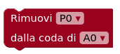
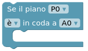

Elevator Saga Manuale
Introduzione
Questo è un gioco di programmazione!
Il tuo compito è scrivere un programma che controlli il comportamento di uno o più ascensori, in altre parole dovrai programmare l'intelligenza artificiale degli ascensori.
L'obiettivo è trasportare persone in maniera efficiente.
Questo vuol dire:
1) Trasportare più persone possibili nel minor tempo possibile.
2) Ridurre al minimo il tempo di attesa delle persone che vogliono usare l'ascensore.
3) Ridurre al minimo il numero di mosse (spostamenti) dell'ascensore.
Come giocare
Componi il tuo programma con i blocchi di codice che troverai cliccando sui menù Cicli, Eventi, ecc.
Per eseguire il tuo codice (e verificare che superi la sfida) clicca sul pulsante Applica codice.
Nota: il pulsante Avvia/Pausa serve a mettere in pausa/riavviare l'esecuzione ma prima di cliccarlo dovrai aver applicato il tuo codice come descritto nella frase precedente!
Puoi velocizzare o rallentare la velocità di esecuzione del programma cliccando i bottoni e .
Ogni sfida consiste di un palazzo con più piani, chiamati P0, P1, P2, ... e uno o più ascensori chiamati A0, A1, A2, ...
Ogni ascensore avrà una coda di operazioni da eseguire, ovvero una lista di piani che visiterà in ordine, dal primo all'ultimo.
Come usare i blocchi di codice
Il tuo programma consiste di ogni blocco di codice che avrai trascinato sulla parte bianca dello schermo (a destra del menù da cui puoi selezionare i blocchi).
In generale:
1) Quando i blocchi vengono collegati uno dopo l'altro verranno eseguiti in sequenza (dall'alto verso il basso)
2) Quando i blocchi vengono collegati uno dentro all'altro allora verranno eseguiti da quello più esterno a quello più interno.
Un blocco che può contenere altri blocchi al suo interno crea un particolare contesto per i blocchi che sono all'interno.
Ad esempio in questa immagine il blocco Per ogni piano farà sì che le istruzioni contenute al suo interno vengano eseguite per ogni piano presente nella sfida corrente.
In questo caso la dicitura questo piano al suo interno indica ogni piano, in altre parole, le istruzioni all'interno del blocco "per ogni piano" verranno eseguite una volta per ogni piano.
Se invece di "questo piano" venisse selezionata, ad esempio, l'opzione "P0", allora le istruzioni all'interno del blocco "per ogni piano" verrebbero eseguite sempre e solo per il piano "P0".
In questa seconda immagine invece il blocco Quando A0 sta per passare per un piano farà sì che le istruzioni al suo interno vengano eseguite ogni volta che l'ascensore "A0" starà per passare per un piano.
In questo caso la dicitura questo piano al suo interno indica, di volta in volta, il particolare piano che l'ascensore sta per attraversare.
Funzionalità dei blocchi
Cicli
I Cicli permettono di definire operazioni che si applicano ad ogni elemento incluso nel ciclo. Ad esempio "ogni piano del palazzo", oppure "ogni ascensore".
Importante: ricordati di usare la dicitura questo piano, questo ascensore per applicare correttamente le operazioni all'interno dei cicli.
Per ogni ascensore

Inserendo altri blocchi all'interno di questo ciclo si possono definire comportamenti validi per tutti gli ascensori.
L'esempio di destra aggiunge il piano terra "P0" alla coda di tutti gli ascensori.
Per ogni piano
Inserendo altri blocchi all'interno di questo ciclo si possono definire comportamenti validi per tutti i piani.
L'esempio di destra aggiunge tutti i piani alla coda dell'ascensore "A0".
Eventi
Gli Eventi permettono di definire operazioni in risposta a cose che succedono durante l'esecuzione del programma.
Ad esempio permettono di definire un comportamento in risposta al fatto che qualcuno abbia premuto il pulsante "salita/discesa" a un certo piano ecc.
Quando la coda di "ascensore" è vuota
Il codice interno a questo evento viene eseguito quando un ascensore termina le operazioni nella sua coda (ed è quindi fermo).
Quando scelgono un piano in "ascensore"
Il codice interno a questo evento viene eseguito quando una persona sceglie un piano di destinazione in un particolare ascensore.
Ricorda di usare la dicitura "questo piano" per riferirti al particolare piano selezionato.
Quando premono "direzione" al piano "piano"
Il codice interno a questo evento viene eseguito quando una persona chiama l'ascensore a un certo piano.
Si può differenziare il comportamento in base alla direzione scelta (salire/scendere) oppure no (entrambe).
Quando "ascensore" sta per passare per "piano"
Il codice interno a questo evento viene eseguito quando l'ascensore sta per passare per un piano senza fermarcisi.
Ricorda di usare la dicitura "questo piano" per riferirti al particolare piano.
Quando "ascensore" arriva a un piano
Il codice interno a questo evento viene eseguito quando l'ascensore sta per arrivare a un piano dove si fermerà per far uscire/entrare persone.
Ricorda di usare la dicitura "questo piano" per riferirti al particolare piano.
Azioni
Le Azioni permettono di dare comandi all'ascensore.Ad esempio permettono di dire all'ascensore di aggiungere un certo piano alla sua coda di operazioni o di andarci direttamente.
Aggiungi "piano" alla coda di "ascensore"
Aggiunge il piano al fondo della coda dell'ascensore.
Questo vuol dire che l'ascensore ci andrà dopo aver completato le operazioni che ha in coda al momento.
Manda "ascensore" al piano "piano" subito
Manda subito l'ascensore al piano indicato.
Dopo essere arrivato, l'ascensore riprenderà ad eseguire le operazioni che ha in coda.
Ordina la coda di "ascensore" in ordine "crescente/decrescente"
Ordina i piani da visitare in ordine crescente (P0, P1, P2, ...) o decrescente (..., P2, P1, P0).
Rimuovi "piano" dalla coda di "ascensore"

Rimuove un certo piano dalla coda di operazioni future di un ascensore.
Controlli
I Controlli permettono di verificare determinate situazioni per prendere decisioni.
Ad esempio permettono di verificare quanto peso sta trasportando un certo ascensore in un certo momento e di agire in base a una condizione decisa da chi programma.
Se "ascensore" sta "salendo/scendendo"
Esegui operazioni solo se l'ascensore sta salendo o scendendo.
Se il piano "piano" "è/non è" in coda a "ascensore"

Esegui operazioni solo se il piano è o non è in coda all'ascensore.
Se il carico di "ascensore" è "maggiore/minore/..." di "percentuale"
Esegui operazioni solo se il peso delle persone presenti nell'ascensore ha determinate caratteristiche.
Nota: ogni persona pesa in modo diverso e casuale e il carico non è automaticamente determinato dal numero di persone.
Se l'ascensore "ascensore" è su un piano "uguale/maggiore/minore" di "piano"
Esegui operazioni solo se l'ascensore si trova in una certa posizione rispetto ad un certo piano.
Selezione
Le Selezioni permettono di selezionare particolari oggetti (piani o ascensori).
Scegli l'ascensore "condizione" che sta "azione"
Seleziona l'ascensore in base a una condizione: il carico dipende da quante persone sono presenti all'interno dell'ascensore, la capienza dipende dalle dimensioni dell'ascensore (un ascensore più capiente può portare più peso). C'è anche la possibilità di scegliere un ascensore completamente a caso.
Inoltre è possibile specificare che l'ascensore deve stare salendo o scendendo (oppure entrambe).
Importante: ricordati di usare la dicitura "questo ascensore" all'interno del blocco per usare effettivamente l'ascensore selezionato.